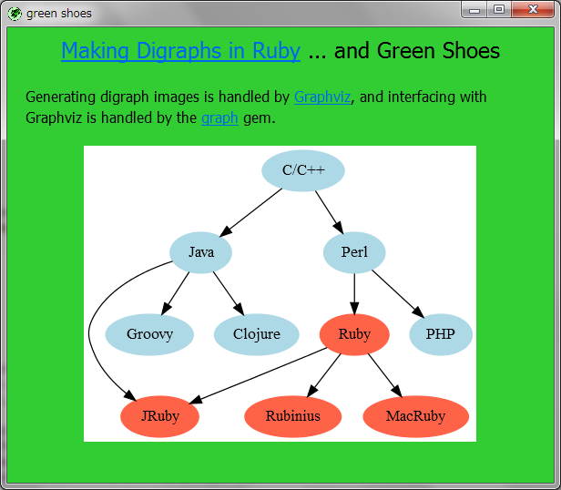

Ruby the Red Gem of Programming
This is an archived post This is an archived post
Previous
Index
Next
Making Digraphs in Ruby ... and Green Shoes
November 24 2011, 5:38 AM
by ashbb

I read
this article
and wrote this code:
https://gist.github.com/1391350
The graph gem and Graphviz is fantastic!
ashbb
755 views and 0 responses